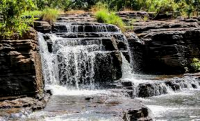

La forêt de Dida
DESCRIPTIONS DU SITE
Les cascades de Karfiguela sont un site naturel emblématique du Burkina Faso.Elles offrent un paysage spectaculaire particulièrement pe pendant la saison des pluies.
L'accès aux cascades est conditionné par une coure ascension entre les rochers et les arbres.Ce site est généralement ouvert de 8h à 18h . En temps de chaleur rien de mieux que de visiter ce lieux pour se détendre ,et oublier un peu les soucis.😉
HISTORIQUE DU SITE
La forêt de Dida est une forêt protégée d'après les politiques de l'état Burkinabè au XXéme siècle.Ainsi elle bénéficie d'un statut juridique de protection pour lutter contre la déforestation et la coupe illégale de bois.